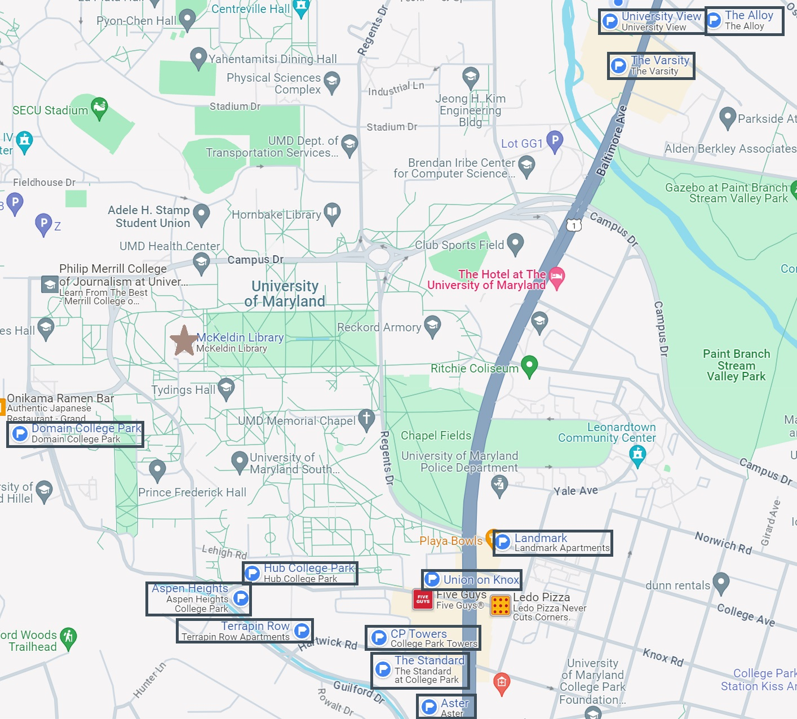

Introduction
As the winter months approach in College Park, University of Maryland students scramble to find the perfect place to live for the upcoming school year. Many students base their search on price, others on location or room size. Recent infrastructure in College Park also complicates the search, as new residential apartments have begun popping up surrounding campus, offering new amenities in more convenient locations.
So, the questions become, which apartment complex is the best choice? This answer differs from one student to another. Off-campus housing services at the University of Maryland has developed a checklist for students to most accurately find their future home. Questions include:

Image from Google Maps
Apartment Complex Details
The Alloy
The Alloy, located at 4700 Berwyn House Rd, is 21 minute walk from McKeldin Library, about 1 mile. They offer 1, 2, and 3 bedroom apartments starting at $1,362 per month. The complex has a 3 star review overall.
“This has to be the worst possible place you can stay,” said one anonymous review in 2020. Some have experienced negative interactions, lack of security, and expensive rent.
Union on Knox
The Union is located across the street from College Park City Hall at 4350 Knox Rd. Though this complex has not opened yet, construction is expected to be finished by next fall. The complex is a 12 minute walk from McKeldin Library, a distance of about 0.6 miles. Their largest unit, a four bedroom apartment, begins at $1,320 per month.
Aster
Aster is a complex located at 7200 Baltimore Ave. approximately 0.6 miles from McKeldin Library, a 15 minute walk. With their largest unit, a three bedroom apartment, starting at $1,439, they have received a 2.5 star rating on Yelp.
Domain
Located 0.4 miles from McKeldin Library, the Domain is a nine minute walk from the center of campus. Its largest unit, a two bedroom, starts at $1,398 per month. The complex has received a 4.3 star rating on Google Reviews.
“They have Good facilities, clean apartments, efficient and friendly staff. I like it!,” said one 5 star review from Elaine Zhang in 2023.
The Hub

Another new construction, the Hub, has received 4.9 star reviews on Google Review. Located 0.4 miles from McKeldin Library at 4210 Knox Rd., it is a quick nine minute walk to the center of campus. The Hub offers apartments with up to five rooms, some of which come with balconies, that start at $1,445 per month.
Landmark
Among students, Landmark is popular due to its central location in downtown College Park at 4500 College Ave. It is 0.6 miles from McKeldin Library, a 13 minute walk. The complex offers up to 4 bedroom leases with a starting monthly cost of $1,309. The complex receives a 4.3 star review on Google Reviews.
“There are so many amazing amenities, the building is beautiful and updated, and it’s right across the street from campus,” Chloe Whyte wrote in a review in 2023.
The Varsity
The Varsity is located at 8150 Baltimore Avenue, an 18 minute walk, about 0.9 miles from McKeldin Library. The complex offers apartments for up to four residents starting at $1,245 per month and received a 3.4 star rating from Google Reviews.
The Standard
The Standard at College Park finished construction in 2023 and is located at 4321 Hartwick Rd., about 0.6 miles from McKeldin Library. Only a five minute walk from the center of campus, the complex offers units with up to five bedrooms starting at $1,420 per month. Boasting a 4.6 star review on Google Reviews, many commenters praise the tour guides and office managers.
CP Towers
CP Towers is located at 4313 Knox Rd. and, unlike many of the other complexes, offers both private and communal rooms. The largest unit, a three bedroom, starts at $1,250. The complex is a 13 minute walk, about 0.6 miles, from McKeldin Library.
Receiving a 3.3 star review on Google Reviews, commenters are torn between positive feedback and negative.
“Live here if you want roaches and to be bothered by management,” one commenter who left a one star review wrote.
“This is my second year and I don't have any issue with roaches,” left another reviewer who gave the complex a five star rating.
University View
The University View is located at 8200 Baltimore Ave., a slightly longer walk to campus at about 20 minutes, one mile away from McKeldin Library. Their largest unit, a four bedroom, starts at $1,250 a month. The complex has a 3.5 star review on Google Reviews.
Terrapin Row
Terrapin Row is an 11 minute walk from McKeldin Library, a distance of about 0.5 miles at 4300 Hartwick Ave. Their largest unit is a four bedroom that starts at $1,299 per month. The complex received a 3.5 star rating from Apartment Ratings.
“I was skeptical at first but after taking a tour I’m very impressed,” one commenter said after taking a tour of the complex. Many reviewers agree and find the amenities to be attractive.
Aspen Heights
Located 0.4 miles away from McKeldin Library, an eight minute walk, at 4205 Knox Rd, Aspen Heights boasts a 4 star review from Google Reviews. Their largest unit, a four bedroom, starts at $1,199 per month.
Comparisons
The data above compares the price and distance from McKeldin Library for each apartment complex. These statistics can help students to determine the best choice for their own living situation through an assessment of location and financial reasoning. It is impossible to determine which complex is truly the best, so the decision is now up to the student based on individual needs and resources.